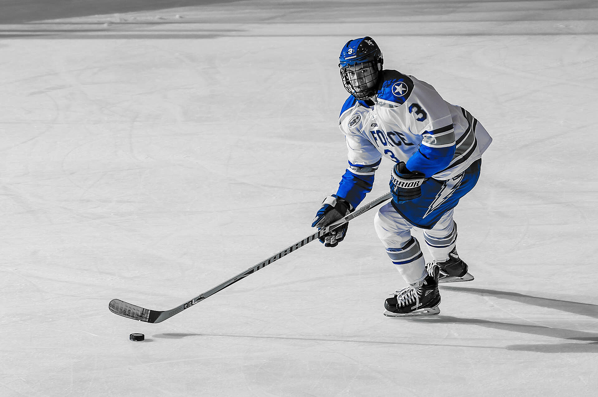

How deep is the Czech professional pool, measured against nine peer nations · 2025/26

Per head, Czechia ranks 4th of 10 nations in the NHL and 5th in the NHL plus the four strongest European leagues. The Czech NHL group peaked at 58 players in 2001/02; it is 20 now.
Three minutes: this number and the six findings below. The rest is the evidence.
* 20 Czech players with at least 20 of 82 NHL games (pro-rated to the schedule) in 2025/26, per 10.9 million inhabitants (Eurostat); every peer counted the same way. Methodology.
Photo: U.S. Air Force Academy · public domain, colour held
What to take from it
1
Per head, the Czech pool sits above the peer median, not at the bottom: 4th of 10 in the NHL.
20 Czech players reached the games threshold in the NHL in 2025/26, 1.83 per million inhabitants against a peer median of 1.21. Counting the four strongest European leagues as well, 53 players, 4.86 per million, 5th of 10.
Sweden and Finland are in another class: 7.26 and 7.25 NHL players per million, about 4 times the Czech rate.
2
The Czech NHL group fell from 58 players in 2001/02 to 20 in 2025/26 — gradually, not in one break.
The most likely season for a fall is 2009/10, with only 9% probability; the step is ×0.83 (90% interval 0.56–1.14). The fitted level is now 43% of its 2002/03 peak.
Finland and Sweden show only upward steps over the same seasons.
3
The gap is young: no Czech skater aged 21 or under reaches the games threshold in the NHL or rung 2.
The largest shortfall against the peer median is forwards aged 21 or under: 6.1 players, then forwards aged 22–25 (2.8).
4
At home, under-21 skaters get 7.9% of Extraliga games; the Liiga gives its young 14.3% and the SHL 16.7%.
On ice time the gap is wider: 5.5% against 11.9% and 11.4%, averaged over 2014/15–2025/26. In 2025/26 the Extraliga share was 5.7% of games.
5
Abroad, Czech skaters in the NHL play the median ice time for their position and score below it; in the Liiga and the SHL they are above the median on both.
Over 2020/21–2025/26, Czech NHL skaters played 0.98 times the median ice time of their position and scored 0.87 times its points per game. In the Liiga the ratios are 1.09 and 1.40, in the SHL 1.08 and 1.30.
6
Since 2010 the national team has drawn on the NHL (30%), the Extraliga (28%) and the KHL (25%) in about equal parts; rung 2 gives 13%.
Averaged over 21 World Championship and Olympic rosters. The KHL is outside the atlas's leagues, so 25% of the roster spots come from a league the atlas does not measure.
What is counted · Limitations · Every Czech player in the pool
| Source | What | Fields used | Accessed |
|---|---|---|---|
| NHL | NHL stats REST: skater and goalie summaries and bios per season, player career records | citizenship (nationalityCode), full birth date; time on ice from 1997/98 | 2026-09-29 |
| Liiga | liiga.fi JSON API (api/v2), regular season (runkosarja) | citizenship, full birth date; time on ice from 2014/15 | 2026-09-29 |
| SHL | shl.se statistics-v2 JSON, SHL regular season | citizenship where given (mostly N/A before about 2010), birth date; time on ice from 2009/10 | 2026-09-29 |
| Extraliga | hokej.cz player statistics (HTML), Extraliga regular season | foreigner flag (eligibility), birth date from player profiles; time on ice from 2013/14 | 2026-09-29 |
| DEL | penny-del.org statistics pages (HTML), regular season (Hauptrunde) | licence nationality from 2022/23; no birth dates | 2026-09-29 |
| National League | data.sihf.ch Statistic API (cache300), National League, regular season | Swiss or foreign licence (eligibility); no birth dates | 2026-09-29 |
| Eurostat | Eurostat demo_gind, indic_de=JAN (population on 1 January) | population on 1 January; dataset updated 2026-07-21 | 2026-09-29 |
| Wikipedia | English Wikipedia roster articles for the World Championship and the Olympics, each at a fixed revision (CC BY-SA 4.0) | 21 roster pages, 614 player articles for missing birth dates | 2026-09-29 |
Only public statistics are used: names, birth dates, nationality and season statistics. Every source was fetched once, with at least a second between requests and within its robots.txt, into a raw cache; the processed tables are committed in data/snapshot/ with a SHA-256 list, so a clean clone rebuilds every number here without fetching. The NHL's terms allow non-commercial informational use; this is a non-commercial page that cites its sources. Wikipedia rosters are used under CC BY-SA 4.0, each page at the revision listed in data/snapshot/rosters_sources.json.
17,991 people in all, 14,309 of them with a nationality. Records are matched in four steps: folded name plus full birth date; first initial, surname and birth date (for Dan and Daniel); for records without a birth date, the name alone when exactly one person of that name played within four seasons and his birth year does not contradict it; and finally records still unmatched are joined within the same league on the same name.
| League | Records | With birth date | Linked on name + birth date | Linked on name only | Ambiguous | Unmatched | Joined within league |
|---|---|---|---|---|---|---|---|
| NHL | 5,004 | 100% | 2,602 | – | – | – | – |
| SHL | 4,023 | 60% | 1,213 | 566 | 12 | 956 | 66 |
| Liiga | 4,036 | 100% | 1,692 | – | – | – | – |
| National League | 1,865 | 0% | 0 | 781 | 21 | 1,063 | 0 |
| DEL | 3,963 | 0% | 0 | 1,269 | 24 | 2,287 | 383 |
| Extraliga | 3,250 | 55% | 593 | 226 | 4 | 1,218 | 14 |
| Rosters | 2,711 | 100% | 1,960 | – | – | – | – |
"Unmatched" records keep the nationality their own league gives them, which for the DEL before 2022/23 and for foreign licences in the National League is none. 189 people carry conflicting nationality codes; in 50 of them an Extraliga "Czech" (the foreigner flag) is overridden by a citizenship or national-team code. 19 Wikipedia roster birth dates matched no league record until day and month were swapped or moved by one day; they are corrected in the analysis and listed in outputs/linking.json.
demo_gind, 1 January of the season's second year.make restore-snapshot puts the committed snapshot in place, make verify-snapshot checks its hashes, make analysis recomputes outputs/ (about six minutes, mostly the break model) and make pages renders this page and the pool page from them. Each output file records the SHA-256 of the snapshot files it was built from, and the tests fail when the snapshot changes without the outputs being rebuilt. Every number in this text is read from outputs/ at render time.
outputs/, and a pool page. The style map, the AI layer and the video proof of concept of the earlier version are withdrawn.What this is for
The same measured questions, asked every summer and answered the same way, with the uncertainty on the page — and a name behind every number.
Every Czech player in the pool · What to take from it · Limitations · The football atlas
_during_game_against_Bentley_Falcons_men%27s_ice_hockey_at_Cadet_Arena_in_Colorado_Springs_on_November_9,_2018_(45170233234).jpg){kind=link}